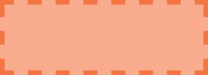

CSS-рамка
Содержание:
Стиль рамки border-style
По умолчанию рамки всегда отрисовываются поверх фона элемента, фон распространяется до внешнего края элемента. Стиль рамки определяет ее отображение, без этого свойства рамки не будут видны вообще. Для элемента можно задавать рамку для всех сторон одновременно с помощью свойства border-style или для каждой стороны отдельно с помощью уточняющих свойств border-top-style и т.д. Не наследуется.
Цвет рамки border-color
Свойство задаёт цвет рамок всех сторон одновременно. С помощью уточняющих свойств можно установить свой цвет для рамки каждой стороны элемента. Если для рамки цвет не задан, то он будет таким же, как и цвет текста элемента. Если в элементе нет текста, то цвет рамки будет таким же, как и цвет текста родительского элемента. Не наследуется.
| border-color | |
|---|---|
| (border-top-color, border-right-color, border-bottom-color, border-left-color) | |
| Значения: | |
| transparent | Устанавливает прозрачный цвет для рамки. При этом ширина рамки остается. Можно использовать для смены цвета рамки при наведении курсора мыши на элемент, чтобы избежать смещение элемента. |
| цвет | Цвет рамок задается при помощи значений свойства color. |
| {border-color: #cacd58;} | |
| {1,4} | Одновременное перечисление четырех разных цветов для рамок элемента, только для свойства |
| border-color: {border-color: #cacd58 #5faf8a #b9cea5 #aab238;} | |
| initial | Устанавливает значение свойства в значение по умолчанию. |
| inherit | Наследует значение свойства от родительского элемента. |
Синтаксис
p{border-color: #cacd58;}
Ширина рамки border-width
Ширина рамки задается с помощью единиц измерения длины или ключевых слов. Если для свойства border-style задано значение none, и для рамки элемента установлена какая-то ширина, то в данном случае ширина рамки приравнивается к нулю. Не наследуется.
| border-width | |
|---|---|
| (border-top-width, border-right-width, border-bottom-width, border-left-width) | |
| Значения: | |
| thin / medium / thick | Ключевые слова, устанавливают ширину рамки относительно друг друга. Первое значение уже, чем второе, второе — тоньше третьего. Значение по умолчанию — medium |
| цвет | Цвет рамок задается при помощи значений свойства color. |
| width (px, em) | {border-width: 5px;} |
| {1,4} | Возможность одновременного задания четырех разных ширин для рамок элемента, только для свойства |
| border-width: {border-width: 5px 10px 15px 3px;} | |
| initial | Устанавливает значение свойства в значение по умолчанию. |
| inherit | Наследует значение свойства от родительского элемента. |
Синтаксис
p{border-width: 2px;}
Задание рамки одним свойством
Свойство border позволяет объединить в себе следующие свойства: border-width, border-style, border-color, например:
div {
width: 100px;
height: 100px;
border: 2px solid grey;
}
При этом заданные свойства будут применяться ко всем границам элемента одновременно. Если какое-то из значений не указано, его место займет значение по умолчанию.
Задание рамки для одной границы элемента
В случае, когда необходимо задать разный стиль границ элемента, можно воспользоваться краткой записью для соответствующей границы.
Перечисленные ниже свойства объединяют в одно объявление следующие свойства: border-width, border-style и border-color. Перечень свойств указывается в заданном порядке, при этом одно или два значения могут быть пропущены, в этом случае их значения примут значения по умолчанию.
Стиль верхней границы задается с помощью свойства border-top, нижней — border-bottom, левой — border-left, правой — border-right.
Синтаксис
p{border-top: 2px solid grey;}